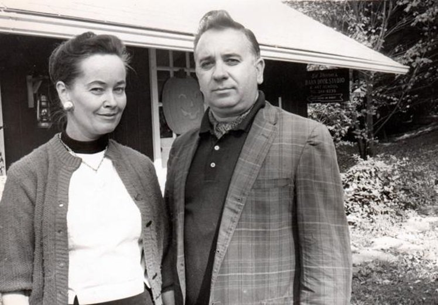

A Démonok között (eredeti címen: The Conjuring) 2013-as amerikai misztikus horror, amelyet James Wan maláj filmrendező készített. A film nagymértékben épít az 1977-es The Amityville Horror című regényre. A film története valós eseményeken alapul, ugyanis Warrenék valóban kapcsolatba kerültek egy családdal, akikkel újonnan vásárolt Long Island-i házukban megmagyarázhatatlan, furcsa jelenségek történtek.
A film 2013 júliusában a mozikba kerülő film szakmai és közönségsikert aratott, egyike lett a legtöbb bevételt hozó horrorfilmeknek és a modern kor egyik legnagyobb alkotásaként emlegetik a műfajt kedvelők. 2014-ben spin-offként egy előzménytörténet készült hozzá Annabelle címen, 2016-ban pedig megjelent a folytatása, a Démonok között 2. 2018. szeptemberétől a második rész spin-offját, az Apácát vetítik a mozikban.
A film 1968-ban kezdődik, amikor két fiatal nő és egy férfi mesélnek a Lorraine-házaspárnak az Annabelle névre hallgató babájukról, amelyet véleményük szerint megszállt valami. Ekkor kerül bemutatásra, hogy Warrenék mesterei a paranormális jelenségeknek és az azoktól való megszabadulásnak: Ed az egyetlen ember a világon, aki nem felszentelt pap és mégis levezényelhet ördögűzést, ha a helyzet úgy kívánja, míg Lorraine különleges képessége az érzelmek és a jelenségek vizuális észlelése, egyfajta látnokként. Majd a film előreugrik pár évet, ahogy az egyik, mindezidáig a nagyközönség elől eltitkolt esetüket mutatják be. 1971-ben a Perron házaspár és öt lánygyermeke Rhode Island-en vesznek áron alul egy elhagyatott házat. Az első nap minden remekül indul, leszámítva, hogy a család kutyája, Sadie, nem akar bemenni a házba, a lányok pedig találnak egy befalazott lejáratot a pincébe.
Ezután azonban különös események veszik kezdetüket: a ház összes órája megáll hajnali 3 óra 7 perckor, Sadie-t pedig elpusztulva találják meg a ház előtt. Ugyanazon az éjjel Nancyt és Christine-t egy kísértet támadja meg és becsapja a szobájuk ajtaját. Carolyn, az anyjuk, aki furcsa sérüléseket fedezett fel magán, tapsolást hall a folyosóról. Követve a zajt, megdöbbenve tapasztalja, hogy a képek lezuhannak a falról. Nevetés hangját hallva benyit a pincébe, ahol csapdába esik, a szellem pedig rátámad. Ugyanebben a pillanatban Andreát és Cindyt a szekrény tetejéről támadja meg egy szörnyalak.
Carolyn elhatározza, hogy szakértők segítségét kéri, így kerül képbe a Warren házaspár, akik az Annabelle-ügy befejezését követően vállalják az esetet. A házat felmérve megállapítják, hogy ördögűzésre lesz szükség, de ehhez a katolikus egyház engedélyét is ki kell kérni, és további vizsgálatok szükségesek. Kutatásaik során felfedezik, hogy a ház valamikor egy Bathesba nevű nőé volt, aki a salemi boszorkány Mary Eastey leszármazottja volt. Feláldozta az egyhetes újszülött gyermekét a Sátánnak, majd felakasztotta magát 1863-ban, de előtte megátkozta a földjét és annak minden jövőbeli bitorlóját. Azóta a földet több kisebb telekre osztották fel, de mindegyik telken gyilkosságok és öngyilkosságok tömege történt az elmúlt évszázadban. Ed és Lorraine néhány ember segítségével megfigyelő-szerkezeteket helyeznek el a házban és kutatni kezdenek. Cindy alvajárása során felfedezik a gardróbban található titkos járatot a pincébe. Lorraine bemegy rajta, de lezuhan, a mélyben pedig találkozik Bathesba egyik régi áldozatának szellemével: egy nővel, akit arra kényszerített, hogy ölje meg a gyermekét. Közben odafent Nancyt a hajánál fogva kezdi el rángatni az entitás.
Warrenék szerint a szellem ráakaszkodik a családra, így szinte lehetetlenséggé válik majd megszabadulni tőle. A Perron család motelbe költözik az események tisztázásáig, míg Warrenél megkérik az ördögűzésre az engedélyt. Eközben a szellem figyelmeztetésképp megtámadja a saját kislányukat is az otthonában, az Annabelle babát is felhasználva. Közben senki sem sejti, de Carolyn testét megszállta a szellem, aki Christine-t és Aprilt visszaviszi magával a házba, hogy megölje ott őket. A többiek utánaerednek, ahol lefogják és lekötözik a nőt. Az idő szűkössége miatt Ed úgy határoz, hogy maga fogja levezényelni az ördögűzést. Kezdetben sikerül is, de Carolyn még egyszer ráront a lányaira, amelyet csak Lorraine tud megfékezni.
Miután hazatértek, egy üzenet várja őket, hogy - már feleslegesen, de - megkapták az engedélyt az ördögűzésre az egyháztól, egyben egy újabb eset kivizsgálására kérték fel őket.
Edward Warren 1926-ban született, amíg felesége Lorraine Rita Warren 1927-ben. A házaspár paranormális esetek ügyében nyomozott. Edward második világháborús veterán és leszerelt rendőr volt, amikor elkezdett démonológiával foglalkozni. Lorraine látnok és médium volt, aki közösen kezdett dolgozni férjével. Közösen okkult múzeumot is nyitottak, emellett számos könyvet írtak paranormális témákban. Rengeteg természetfeletti ügyet vizsgáltak ki közösen. Ed Warren 2006-ban hunyt el, azonban felesége továbbra is folytatja a paranormális jelenségek utáni nyomozást. Fontosabb ügyeik között szerepel a híres Amityville horror eset, emellett számos ügynél segédkeztek, amelyben démoni megszállás lehetett a háttérben.
 Donna 1970-ben kapta édesanyjától a játékot, amelyet használtan vettek. Donna főiskolán tanult abban az időben, és egy Angie nevű lánnyal lakott együtt. Semelyikük sem gondolta, hogy a baba különleges lenne. Azonban hamarosan azt vették észre, hogy Annabelle testhelyzeteket változtat, pár héttel később határozottan mozgott. Egyszer az ágyon hagyták a babát, amely átköltözött a kanapéra estére.
Barátjuk, Lou gyűlölte a babát. A fiú úgy gondolta, hogy valamiféle ördög lakozik benne, de a lányok próbálták racionálisan megmagyarázni a kérdést. Azonban Annabelle egyre furcsább lett. Később pergamen papíron találtak segítségkérő üzeneteket, amelyek a semmiből bukkantak elő.
Egyik este Donna véresen talált rá a babára. Úgy tűnt, hogy a piros folyadék a babából jön. Ez volt az utolsó csepp, ekkor vitték el a játékot egy médiumhoz, aki azt mondta, hogy egy Annabelle Higgins nevű lány halt meg a lakásukban. A nő szerint a lelke a lakásban maradt, megbízik a két új lányban. Később Donna és Angie megengedte a a léleknek, hogy velük maradjon, ám ekkor elszabadult a pokol.
Lou rémálmokkal küzdött, amelyben Annabelle szerepelt. Sokszor erőszakosan bánt vele. Angie és Lou pár nappal később hangokat hallott Donna szobájából. Azonban csak Annabelle volt a szobában. Lou testén hirtelen karmolásnyomok tűntek fel, a húsa néhol megégett. A fiú tudta, hogy Annabelle tette ezt vele.
Ekkor léptek kapcsolatba a Warren házaspárral, akik megállapították, hogy démonnal van dolguk. A babát nem szállta meg semmi, azonban azzal manipulált. Az igazi célpontja Donna volt. A pap végezte el az ördögűzést a lakásban, aztán magukkal vitték a babát egy zsákban. Ed Warren végig követte a pap autóját, amivel folyamatos problémák voltak. A szenteltvíz csak órákra oldotta meg a gondot. Annabelle később elkezdte régi trükkjeit Warrenék otthonában is. Később a házaspár bezárta a babát egy biztos helyre, azonban a lélek továbbra is benne rekedt. Másként képtelen voltak megoldani az először egyszerűnek tűnő helyzetet. Annabelle ma is arra vár, hogy szabadon engedjék.